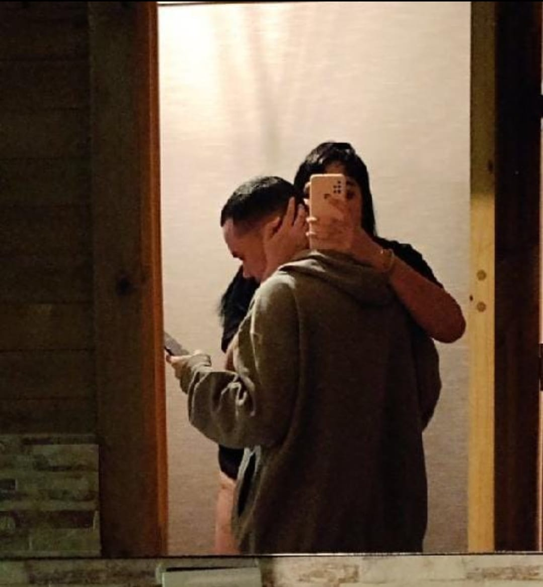
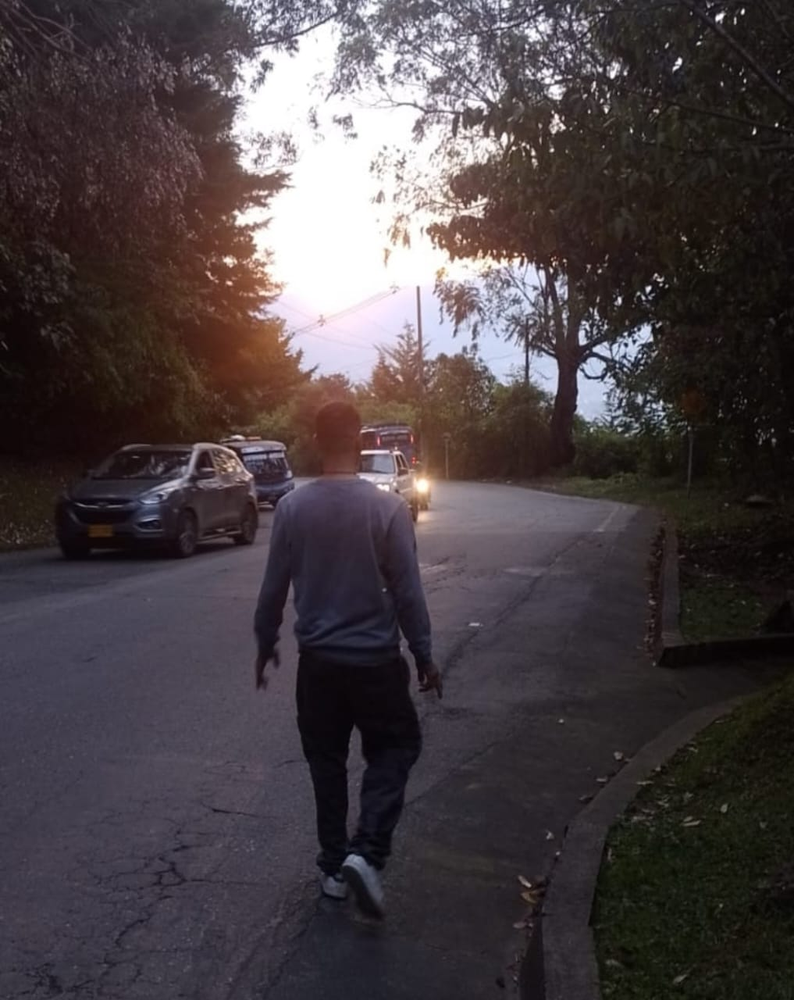
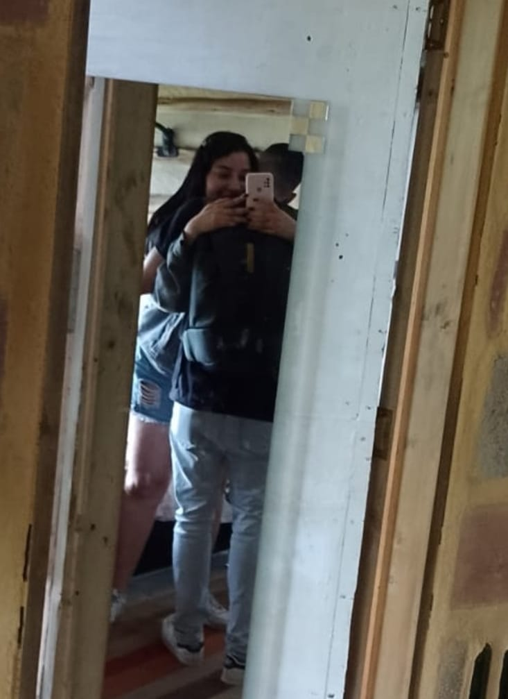
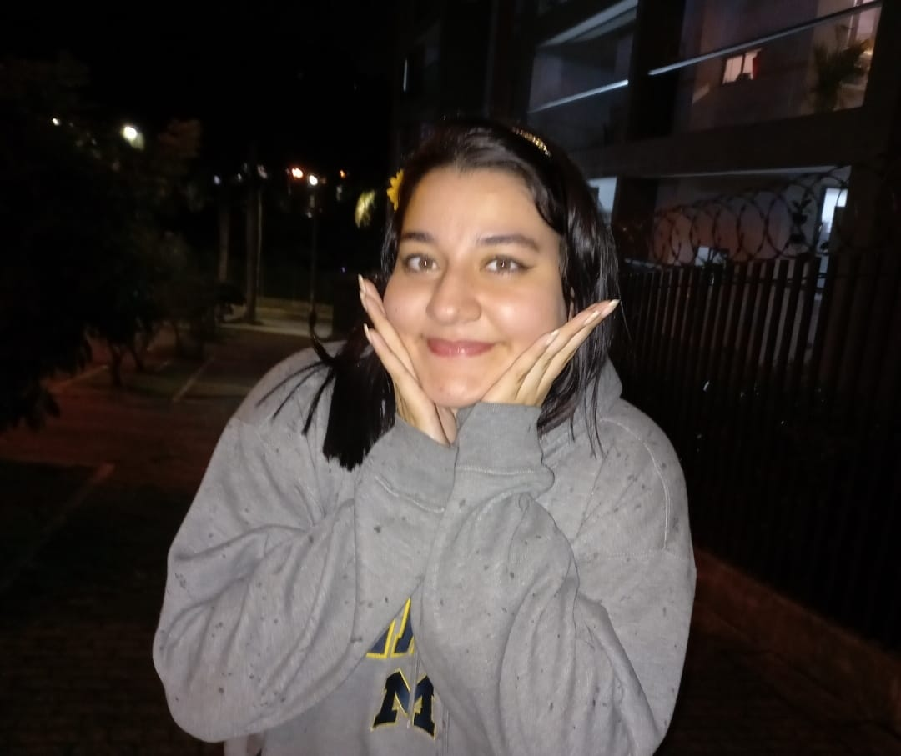
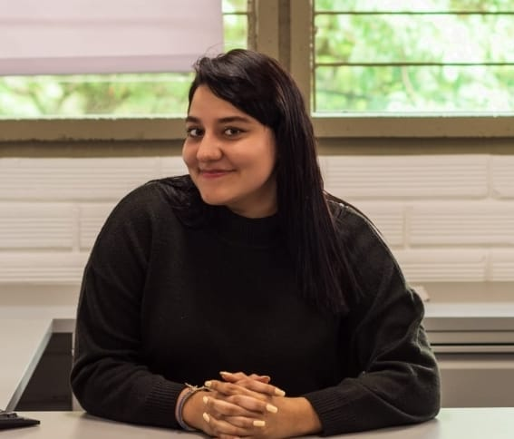
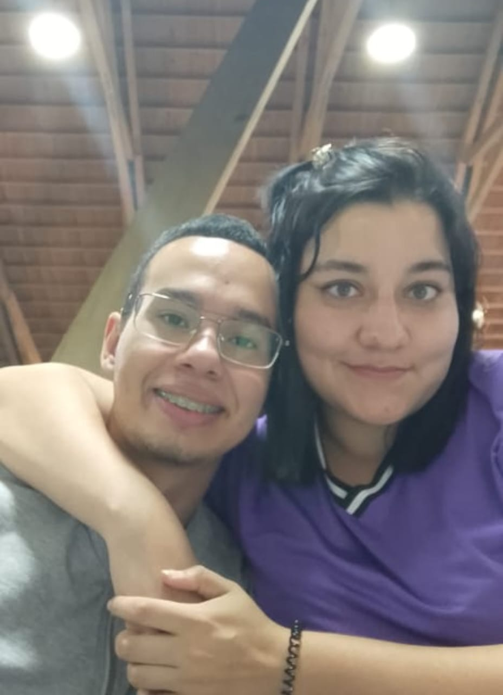
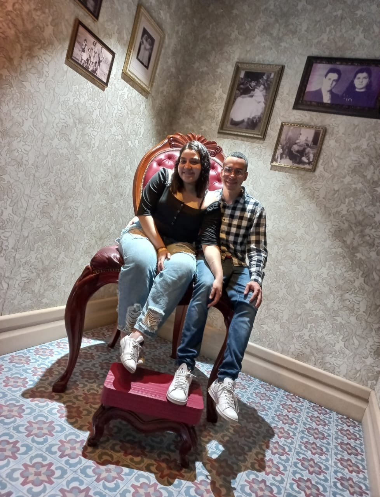
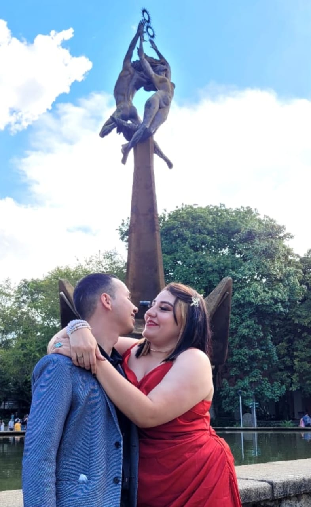

Gracias amor mío. Gracias por estos 365 días donde hemos construido el amor. Te lo he dicho y te lo diré mientras pueda. Tu eres la gran representación de lo que significa la palabra amor.
Todavía recuerdo el primer día que te ví. Estaba tan nervioso, pero a la vez tan feliz. Sabía que iba a ser un día totalmente especial. Siempre supe que eres una gran mujer. Inteligente, hermosa, sabia, honesta, responsable, disciplinada y lo más importante, llevas el amor en ti siempre. Recuerdo que siempre estabas dispuesta a ayudarme, en mis mejores momentos, pero también en mis peores momentos. Eras incondicional. Tenías una cantidad de valores que admiraba tanto, y que son tan escasos hoy en día que era inevitable sentir amor por ti. Eras lo más hermoso con lo que un ser humano se puede encontrar en la vida. Y lo que le agradezco a Dios es que mi mayor tesoro y mi mayor fortuna fue conocerte.
Hace 1 año fue una de las mejores aventuras de mi vida. Salí de viaje con la que unas horas después sería mi novia y amor de mi vida. Fueron tantas sonrisas y momentos tan hermosos que tengo la fortuna de recordar mientras escribo. Todo fue tan especial y tan único. Las caminadas a desayunar, los juegos y cada uno de los momentos que iluminabas con esa luz que siempre te caracteriza. No te imaginas lo feliz que he sido al lado tuyo, es algo indescriptible.
Todavía recuerdo el día que en otra de nuestras aventuras fuimos buscando una tienda, pero resulta que estabamos en semana santa y no habían tiendas abiertas. Pensé que eso iba a ser un problema pero resultó ser una de las mejores bendiciones que me ha dado la vida. Caminamos y caminamos buscando tiendas, a la espera de encontrar por lo menos una puerta abierta, pensamos que nos habíamos perdido, pero resulta que nos encontramos a nosotros mismos, disfrutando de la vida, disfrutando de la naturaleza, disfrutando del amor. No sabes cuanto te amo, y cada momento te amo más y más.
Cada uno de esos momentos me hacen sentir el hombre más afortunado en el planeta tierra. Me siento increiblemente multimillonario con tu amor. Esos momentos los viví con tanta felicidad, que el solo hecho de pensarlo me hace feliz otra vez. Gracias mi vida hermosa por regalarme esos grandes momentos. Verte sonreir, verte bailar, verte gritar de la alegría, verte en tus ataques dopaminómicos me hace demasiado feliz. Eternas gracias por compartir esa felicidad conmigo. Si tu eres feliz, yo lo soy el doble y por eso te amo.
Me encanta cuando sonríes y más cuando te tomo fotos, a pesar que no tengo una gran habilidad para tomarlas, pero hago el esfuerzo para que se refleje en las fotografías cada uno de los aspectos de tu belleza que hacen perderme en ti. Me encantó que la primer fotografía que tomé desde el celular fueras tú con una flor amarilla, de esas que tanto te gustan, del mismo color que te encanta tanto y que representa esa misma luz que tú eres.
Me encanta también ser testigo de tus procesos, de cada uno de tus pasos. Soy fiel testigo de que para ti ni siquiera el cielo es el límite. Te admiro demasiado, esa profesionalidad con la que haces las cosas, cada una de las decisiones éticas que representan tus valores en esta sociedad donde es tan poco valorado ese aspecto. Admiro mucho esa disciplina que tienes, cada uno de los retos que te propones y que logras con el tiempo. Amo demasiado cada uno de los momentos donde te sientes vulnerable o frustrada, porque son indicativos de tu esfuerzo, de que a pesar de las adversidades eres resiliente, eres capaz de sobreponer esos sentimientos y triunfar. Mi admiración es total por ti y por eso también te amo.
Disfruto demasiado todos los momentos que pasamos ayudándonos el uno al otro, asumiendo cada uno nuestras responsabilidades, y sabiendo las fortalezas y debilidades de cada uno de nosotros para mejorar como el gran equipo que somos. Si existe alguien que merece mérito de mis triunfos eres tú, gracias a tu amor y tu comprensión he podido superar tantos miedos, tantos obstáculos, que puedo firmemente decir que gracias a ti he crecido lo suficiente para saber lo que soy desde mi ser y desde lo que hago en mi profesión y mi vida personal.
Me gusta saber que somos una pareja interesada en aprender, mírate tú, ya casi que eres programadora front-end en menos de 1 año de si quiera conocer algo de programación. Uno de los días más felices de mi vida fue cuando fuimos al Parque Explora, fue un sueño hecho realidad junto a la persona que amo. Me encanta saber que ese día fuimos tan felices, jugando como niños, pensando como adultos, y amandonos como sólo nosotros podemos amar. Gracias por esas memorias amor.
El día de tus grados fue uno de los días en que más orgullo sentí. Ahí vi materializados los sueños de una mujer soñadora, luchadora, una mujer que tiene el poder de ser quien quiera ser. Sé que sólo es el principio de tus sueños, pero lo más importante es que también es el principio de nustros sueños, y que estamos juntos en nuestros momentos de dificultad, pero también en nuestros momentos de triunfo. Te amo demasiado.
Termino este escrito recordándote lo mucho que vales, lo mucho que te admiro y lo mucho que te amo. Gracias por existir. Gracias por llenar mi existencia de luz. Gracias por ser más de lo que siempre soñé. Te amo demasiado.
Posdata: Invitación a cenar. Fecha: 25 de diciembre 2022. Lugar: Casa Andrés. Hora: 7:00pm